Bon · Ankommen14 P.

Ankommen
Zum Ankommen gibt es einen Aperitif. Die Tafel ist gedeckt, die Kerzen brennen.
Culinarium · Startseite · Teil «So läuft ein Abend»
Grobe Skizzen mit Rudis Fotos, nicht fertig gebaut. Rahmen mit eigenem Laufbalken lassen sich darin scrollen. Was ein Platzhalter ist, steht unter der Skizze.
Ein Bild, als sässe man an der Tafel. Beim Scrollen wechselt, was vor einem steht: Aperitif, Teller, die fünf Gläser, Momo am Tisch.


Zum Ankommen gibt es einen Aperitif. Die Tafel ist gedeckt, die Kerzen brennen.
Aus der Küche kommen drei Gänge, Teller für Teller für die ganze Tafel. Das Menü wechselt mit jedem Abend.
Zu den Gängen kommen fünf Signature Drinks von Momo, gemacht für genau dieses Essen.
Momo erklärt jeden Drink am Tisch, damit man die Aromen nicht nur schmeckt, sondern auch versteht.
Lücke: Am stärksten wäre es mit vier Fotos aus genau demselben Blickwinkel, von einem Platz an der Tafel aus. Solche Fotos gibt es noch nicht.
Die vier Stationen hängen als Bons an der Schiene am Pass, jeder mit grossem Foto. Man zieht sie seitwärts durch.
Zum Ankommen gibt es einen Aperitif. Die Tafel ist gedeckt, die Kerzen brennen.
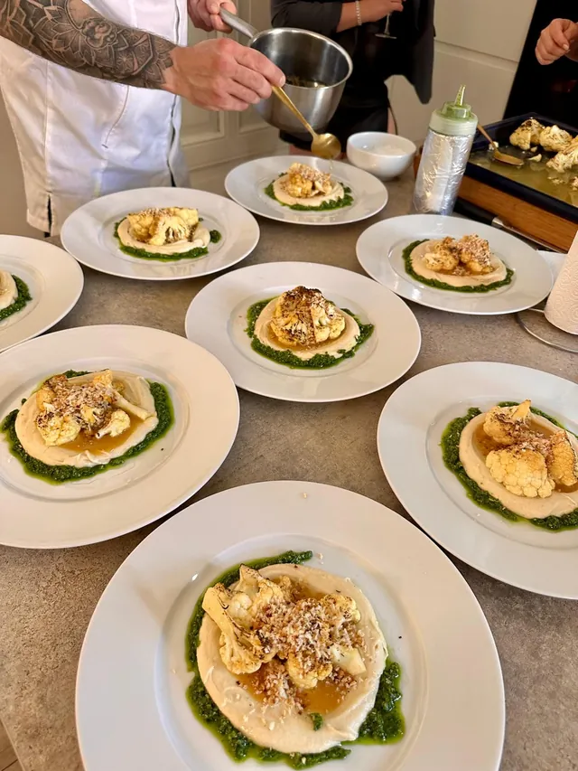
Teller für Teller für die ganze Tafel. Das Menü wechselt mit jedem Abend.

Fünf Signature Drinks von Momo, gemacht für genau dieses Essen.
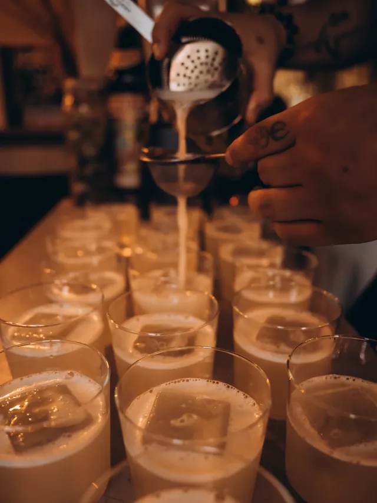
Momo erklärt jeden Drink am Tisch. Dazu ein Blick auf seine Techniken.
Das «x» des Plakats sitzt mitten im Schachbrett. Glas und Teller teilen sich die vier Felder, der Abend als Gespräch der beiden.
Zum Ankommen ein Aperitif, die Kerzen brennen schon.
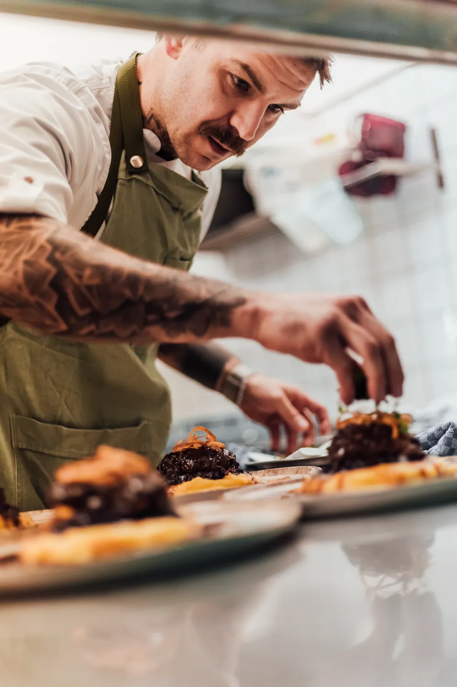
Teller für Teller für die ganze Tafel.

Gemacht für genau dieses Essen.
Jeder Drink wird am Tisch erklärt.
Am Rand steht eine Kerze, die herunterbrennt, während die vier Stationen bildschirmfüllend vorbeiziehen. Am Ende ist sie fast unten.

Zum Ankommen gibt es einen Aperitif. Die Tafel ist gedeckt, die Kerzen brennen.
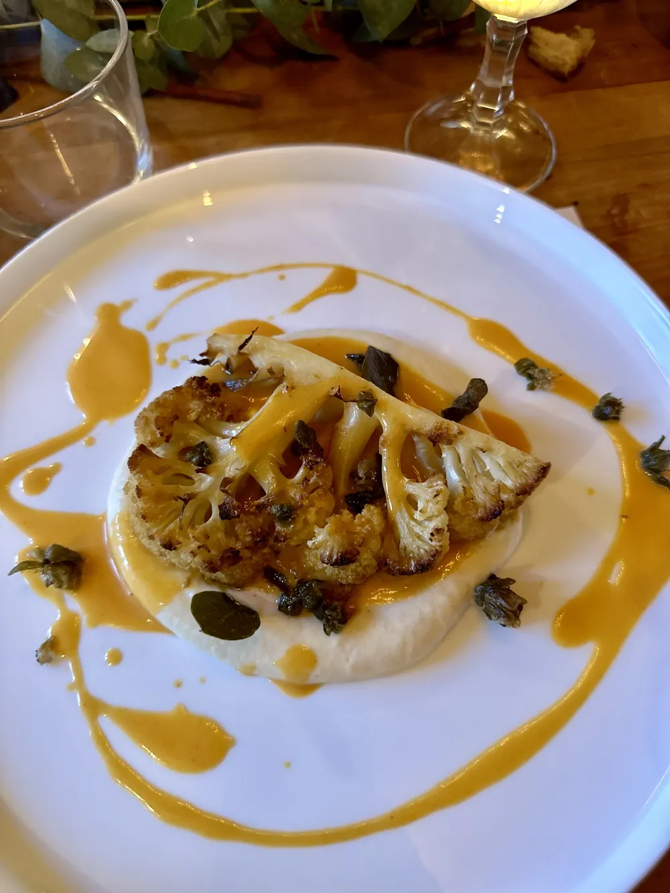
Teller für Teller für die ganze Tafel. Das Menü wechselt mit jedem Abend.
Fünf Signature Drinks von Momo, gemacht für genau dieses Essen.

Momo erklärt jeden Drink am Tisch. Dazu ein Blick auf seine Techniken.
Statt römischer Ziffern läuft die Uhrzeit. Ein randloses Bild je Uhrzeit, die Ziffern rollen weiter wie am Bahnhof.

Ein Aperitif, die Kerzen brennen.
Teller für Teller für die ganze Tafel.
Von Momo, gemacht für genau dieses Essen.
Jeder Drink wird am Tisch erklärt.
Platzhalter: 19:00, 19:45, 20:30 und 22:00 sind erfunden. Die echten Zeiten muss Rudi nennen.
Der Abend in seinen echten Zahlen. Jede Zahl steigt aus einer Linie in Kerzenfarbe, darüber das grosse Foto.
Zum Ankommen, die Kerzen brennen schon.
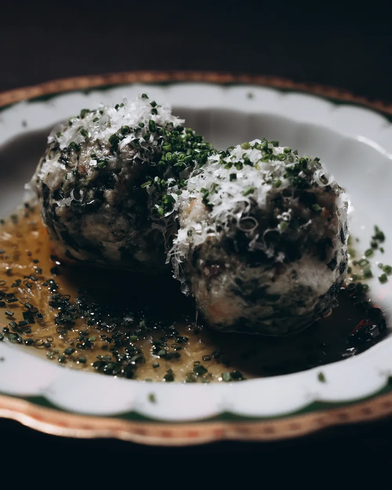
Teller für Teller, jeden Abend ein anderes Menü.
Momo erklärt am Tisch, was drin ist und wie.

Am Ende sitzt man mit Leuten, die man vorher nicht kannte.
Anders als heute: Das Tasting geht in die «5» ein, dafür kommen die vierzehn Plätze als Schluss dazu, so wie es der Einleitungssatz schon sagt.
Der Einleitungssatz wird selbst zum Ablauf. Kleine Fotos sitzen zwischen den Wörtern, und ein angetipptes wird an derselben Stelle gross.
Ungefähr so: ankommen , anstossen , essen , probieren , zuhören , und am Ende mit Leuten am Tisch sitzen , die man vorher nicht kannte.
Eine geschlossene Menümappe mit «Momo x Rudi». Sie schlägt sich auf: links ein Foto vom gedeckten Tisch, rechts der Ablauf wie eine Karte gesetzt.
Ein Aperitif. Die Tafel ist gedeckt, die Kerzen brennen.
Teller für Teller für die ganze Tafel. Wechselt mit jedem Abend.
Signature Drinks von Momo, gemacht für genau dieses Essen.
Momo erklärt jeden Drink am Tisch.

Ein Abend als Filmrolle auf dem Kontaktbogen. Vier Bilder sind mit Fettstift eingekreist, und genau diese vier werden gross.

Zum Ankommen gibt es einen Aperitif. Die Tafel ist gedeckt, die Kerzen brennen.
Jede Station füllt einen ganzen Bildschirm, darauf ein einziger Satz. Wie ein Film in vier Szenen.
Ein Aperitif, und die Kerzen brennen schon.
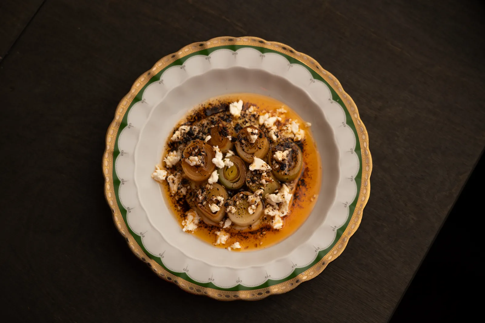
Teller für Teller, für die ganze Tafel.
Fünf Gläser, gemacht für genau dieses Essen.
Momo erklärt, was man da gerade schmeckt.
Ein Schalter zwischen «Am Tisch» und «Hinter dem Tresen». Dieselben vier Stationen, einmal vom Gast aus, einmal von Momo und Rudi aus.
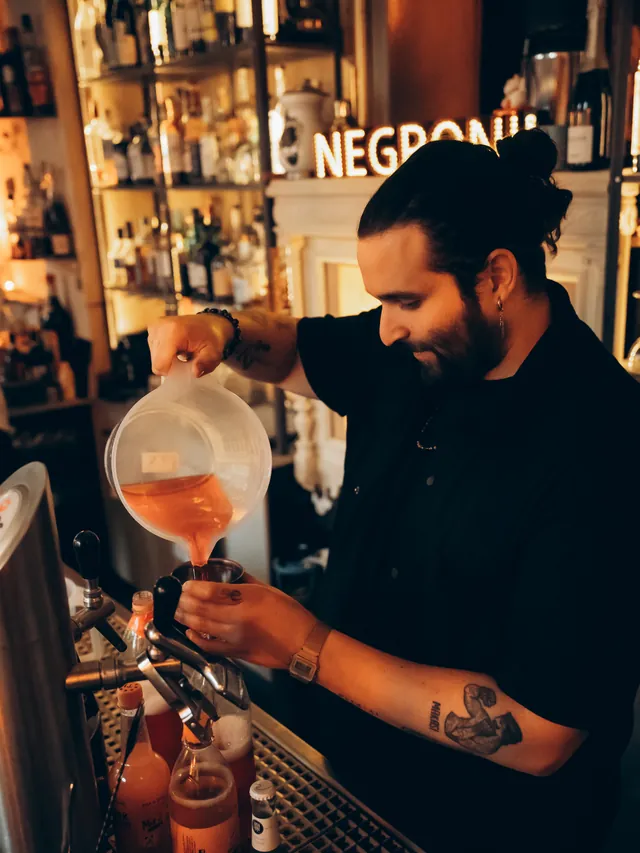
Ein Aperitif, die Kerzen brennen.Momo giesst schon ein, bevor die Tür aufgeht.


Teller für Teller für die ganze Tafel.Vierzehn Teller auf einmal am Pass.
Fünf Drinks, gemacht für dieses Essen.Geklärt, gewaschen, Tage vorher angesetzt.


Momo erklärt jeden Drink am Tisch.Die Technik hinter dem Glas.
Platzhalter: Die Sätze hinter dem Tresen sind von mir geschrieben. Ob die Drinks wirklich Tage vorher angesetzt werden, muss Momo bestätigen.
Ein gezeichneter Grundriss mit Tür, Tresen, Pass und der Tafel mit vierzehn Stühlen. Eine Linie in Kerzenfarbe zeigt den Weg, ein angetippter Ort zeigt sein Foto.
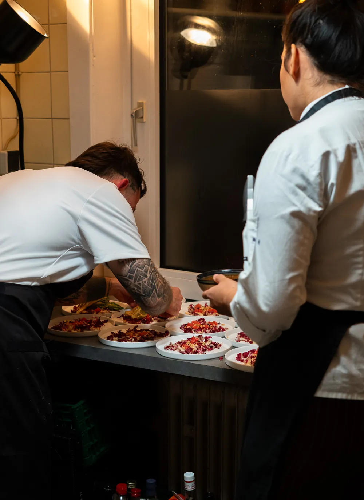
Zum Ankommen gibt es einen Aperitif. Die Tafel ist gedeckt, die Kerzen brennen.
Platzhalter: Der Grundriss ist frei erfunden. Für diese Fassung bräuchte es eine Skizze des echten Raums von Rudi.
Jede Station zeigt, was danach auf dem Tisch liegt. Vier stille Bilder in verschiedenen Grössen um einen Satz in der Mitte.
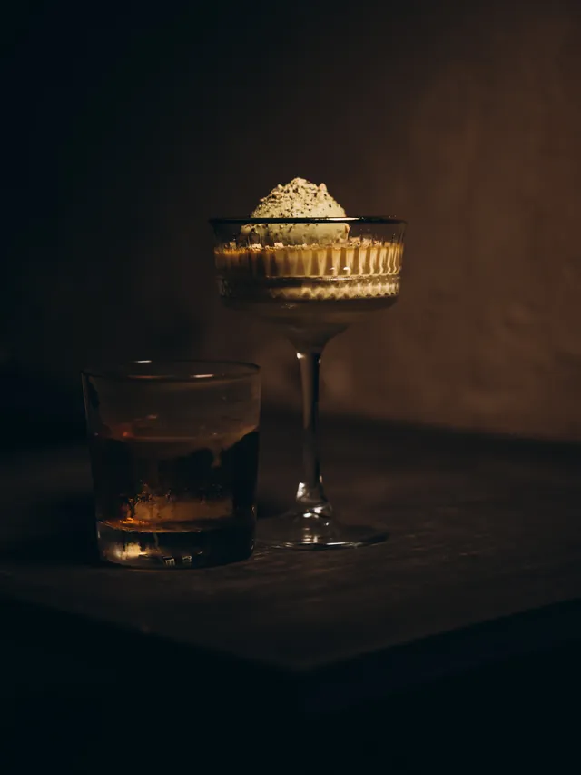
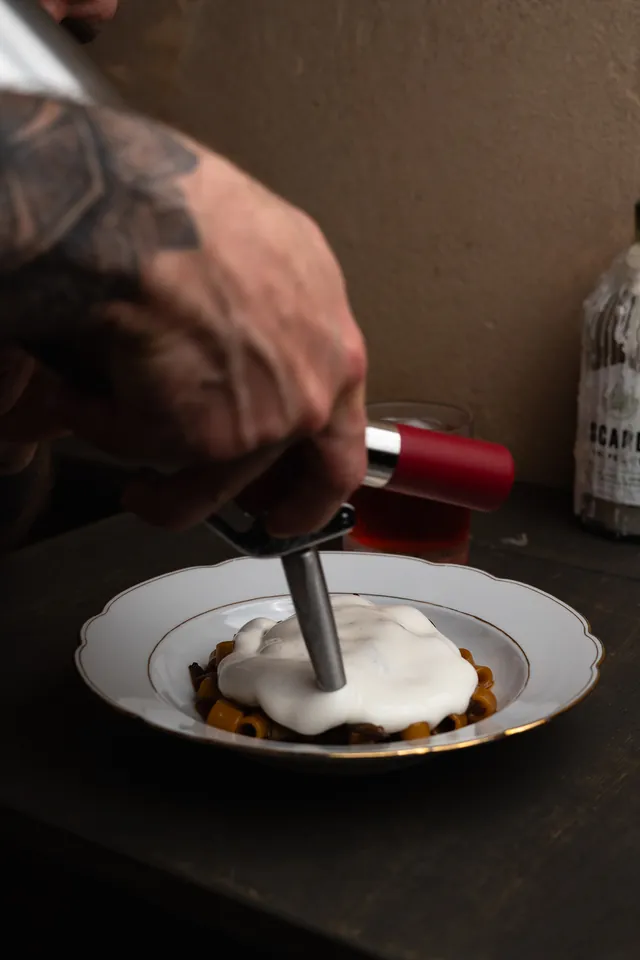
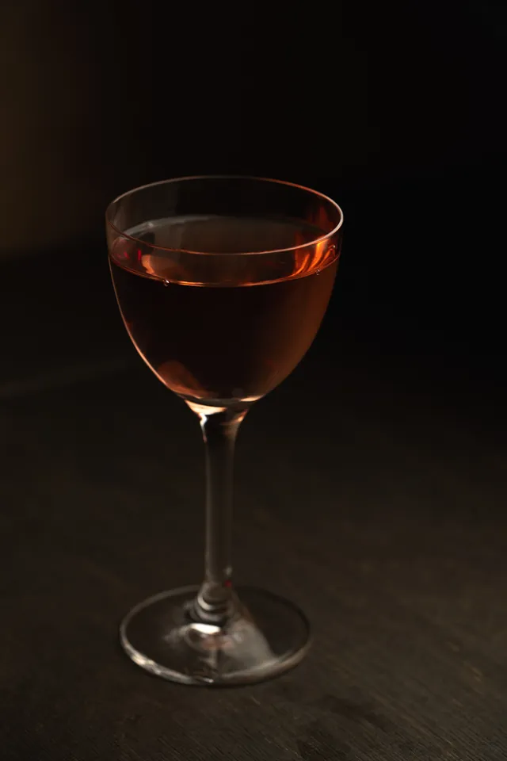

Was von einem Abend auf dem Tisch bleibt.
Ein Aperitif, drei Gänge, fünf Drinks, jeder erklärt. Und vierzehn Leute, die vorher Fremde waren.
Platzhalter: Die echten Bilder (leeres Glas, Teller mit Saucenspur, fünf leere Gläser, Serviette) gibt es noch nicht. Sie müssten an einem Abend aufgenommen werden. Die Fotos hier sind nur ungefähr passend.
Der Ablauf als kurzer Brief in Rudis Ton, mit eingesteckten Abzügen am Rand und seiner Unterschrift.
Du kommst rein, und erstmal gibt’s einen Aperitif. Die Tafel ist schon gedeckt, die Kerzen brennen, keiner kennt keinen.
Dann komm ich mit dem ersten Teller. Drei Gänge, für alle gleichzeitig, und jeden Abend was anderes.
Momo stellt dir zu den Gängen fünf Drinks hin, gemacht für genau dieses Essen. Und er erzählt dir, was drin ist und wie er’s gemacht hat: Fatwashing, Milkwashing, Klärung mit Enzymen.
Wenn du am Ende mit Leuten quatschst, die du vorher nicht kanntest: Dann haste allet richtig jemacht!
Platzhalter: Der Brief ist mein Entwurf in Rudis Ton. Echt ist nur «Dann haste allet richtig jemacht!», das ist Rudis Satz. Den Rest müsste Rudi selbst schreiben oder freigeben.
Jede Station schiebt sich über die vorige und bleibt leicht versetzt liegen, wie abgestellte Teller. Am Ende liegt der ganze Abend als Stapel da.
Zum Ankommen gibt es einen Aperitif. Die Tafel ist gedeckt, die Kerzen brennen.
Aus der Küche kommen drei Gänge, Teller für Teller für die ganze Tafel. Das Menü wechselt mit jedem Abend.
Zu den Gängen kommen fünf Signature Drinks von Momo, gemacht für genau dieses Essen.

Momo erklärt jeden Drink am Tisch, damit man die Aromen nicht nur schmeckt, sondern auch versteht.
Skizzen, nicht gebaut. Bilder: Rudis Ordner. Ausgewählt wird hier nur die Form, die Fotos lassen sich in jeder Fassung tauschen.